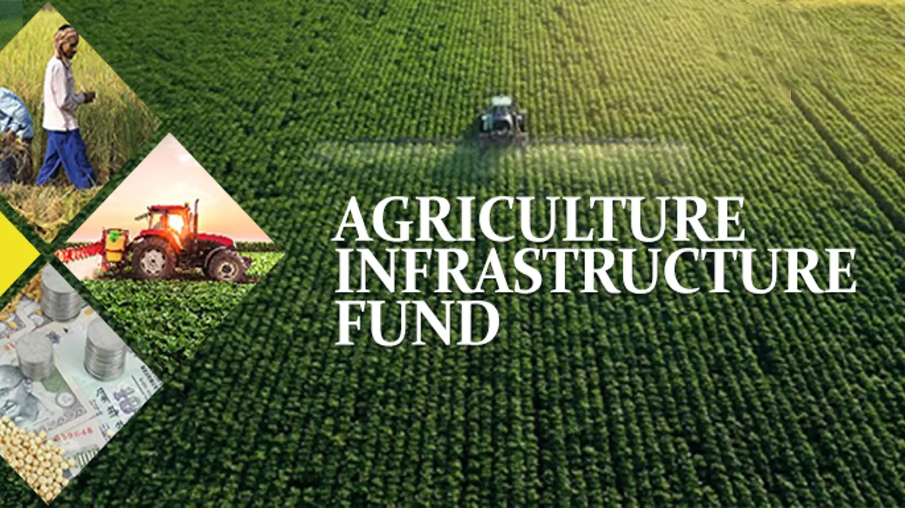

The financing facility will be provided for funding Agriculture Infrastructure Projects at farm-gate & aggregation points to agri entrepreneurs, farmers, Primary Agricultural Cooperative Societies, Farmers Producer Organizations, Start-ups, state agencies, state sponsored Public Private partnerships, etc.
Benefits:
The scheme targets to provide following benefits:
1) Improved marketing infrastructure to allow farmers to sell directly to a larger base of consumers and hence, increase value realization for the farmers. This will improve the overall income of farmers.
2) With investments in logistics infrastructure, farmers will be able to sell in the market with reduced post-harvest losses and a smaller number of intermediaries. This further will make farmers independent and improve access to market.
3) With modern packaging and cold storage system access, farmers will be able to further decide when to sell in the market and improve realization.
4) Community farming assets for improved productivity and optimization of inputs will result in substantial savings to farmers.
5) Government will be able to direct priority sector lending in the currently unviable projects by supporting through interest subvention, incentive and credit guarantee. This will initiate the cycle of innovation and private sector investment in agriculture.
Documents Required:
1.Application Forms: Bank’s loan application form or customer request letter, filled and signed.
2.Photographs: Passport size photos of promoter/partners/directors.
3.Identity Proof: Voter ID, PAN card, Aadhaar card, or Driving license.
4.Address Proof:
• Residence: Voter ID, Passport, Aadhaar card, Driving license, Electricity Bill, or Latest Property Tax Bill.
• Business Office: Electricity Bill, Latest Property Tax Receipt, Certificate of Incorporation (Companies), or Certificate of Registration (Partnership Firms).
5.Registration Proof:
•Company: Article of Association.
•Partnership: Certificate of Registration.
•MSMEs: DIC Certificate/Udyog Aadhar.
6.Income Tax Returns: Last 3 years (if available).
7.Audited Balance Sheets: Last 3 years (if available).
8.GST Certificate: If applicable.
9.Land Ownership Records: Title deed/lease deed and permission to mortgage if leasehold.
10.ROC Search Report: For the company.
11.KYC Documents: Of the promoter/firm/company.
12.Bank Statements: Last one year (if available).
13.Loan Repayment Track Record: Loan statements.
14.Net Worth Statements: Of promoter.
15.Project Report: Detailed project report.
16.Local Authority Permissions: Layout plans/estimates, building sanctions (if applicable).
Eligible applicants include farmers, cooperatives, farmer producer organizations (FPOs), self-help groups (SHGs), agri-entrepreneurs, and other entities involved in the agricultural sector.
The fund supports various projects such as the construction of cold storage, warehouses, sorting and grading units, processing facilities, and other infrastructure related to the agriculture supply chain.
The AIF provides loans at a subsidized interest rate, typically around 3% per annum, for a tenure of up to 7 years, with a grace period of 6 months to 2 years, depending on the project.
Interested applicants can apply online through the official website of the Ministry of Agriculture and Farmers' Welfare or through designated financial institutions and banks that implement the scheme.
Yes, farmers must apply for the subsidy within a specified period after purchasing the smartphone. Details about the application timeline can be found on the iKhedut portal.
Once the application is verified and approved, the subsidy amount is directly credited to the farmer’s bank account linked to their application on the iKhedut portal.
Agriculture Infrastructure Fund
The Agriculture Infrastructure Fund supports post-harvest projects like e-marketing platforms, warehouses, cold chains, and logistics, as well as community farming assets such as organic input production, smart agriculture infrastructure, and crop supply chain facilities.
READ
Agriculture Infrastructure Fund
The fund provides financing for agriculture infrastructure projects at farm-gate and aggregation points to agri-entrepreneurs, farmers, cooperatives, FPOs, start-ups, state agencies, and public-private partnerships.
READ
Agriculture Infrastructure Fund
The Agriculture Infrastructure Fund offers medium to long-term financing for post-harvest management and community farming projects, providing incentives and financial support to enhance agricultural infrastructure.
READ